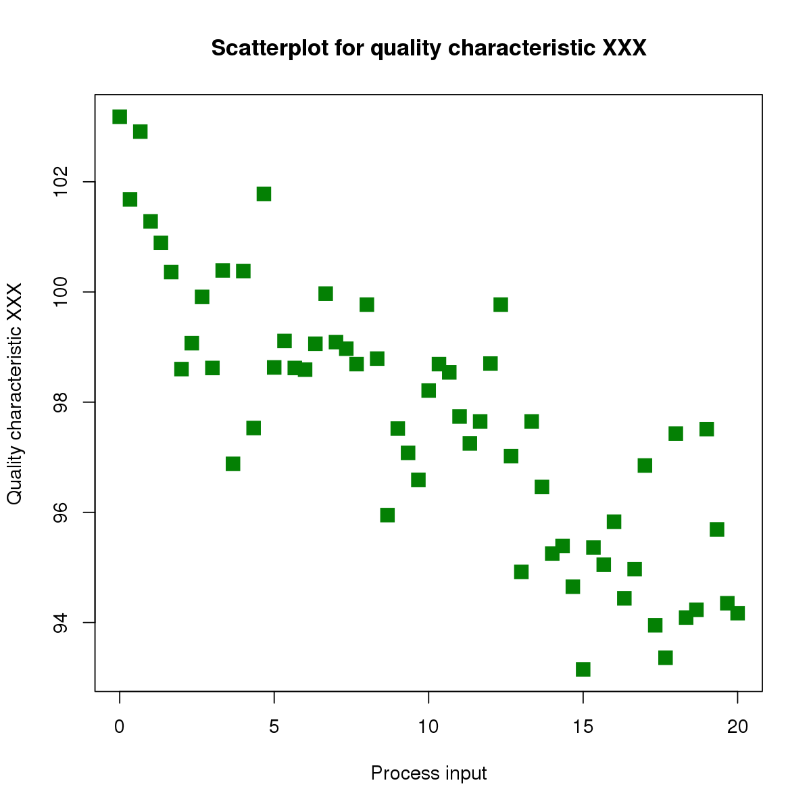
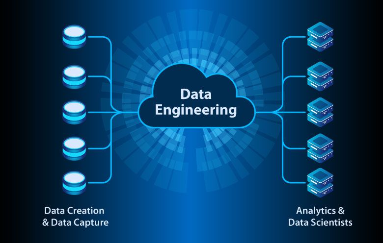
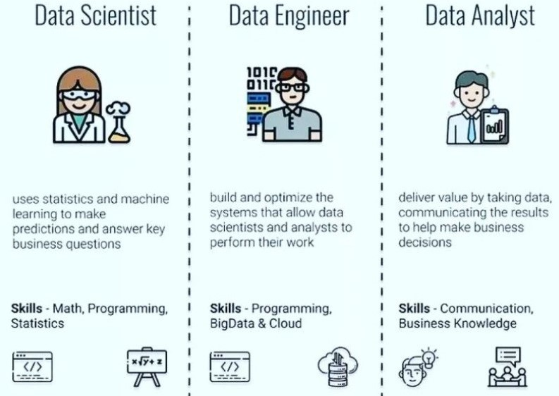

| Nama Pendamping Kelompok |
|---|
| Sasa Rahma Lia |
| Rika Ajeng Finatih |
| No | Nama | NIM |
|---|---|---|
| 1 | Eka Fidiya Putri | 122450045 |
| 2 | Eksanty F Sugma Islamiaty | 122450001 |
| 3 | Nabila Anilda Zahrah | 122450063 |
| 4 | Rani Puspita Sari | 122450030 |
| 5 | Nathanael Daniel Santoso | 122450059 |
| 6 | Berliana Enda Putri | 122450065 |
| 7 | Anwar Muslim | 122450117 |
| 8 | Deva Anjani Khayyuninafsyah | 122450014 |
| 9 | Abit Ahman Oktarian | 122450042 |
| 10 | Safitri | 122450071 |
| 11 | M Deriansyah Okutra | 122450101 |
| 12 | Nurul Alfajar Gumel | 122450127 |
| 13 | Natasya Ega Lina Marbun | 122450024 |
| 14 | Diana Syahfitri | 122450141 |
| Senin | Selasa | Rabu | Kamis | Jumat | Sabtu | Minggu |
|---|---|---|---|---|---|---|
| ALPRO (09.00) Struktur Data ------- ------- ------- |
------- ------- ------- ------- ------- ------- |
------- ------- ------- ------- ------- ------- |
------- ------- ------- ------- ------- ------- |
------- ------- ------- ------- ------- ------- |
------- ------- ------- ------- ------- ------- |
------- ------- ------- ------- ------- ------- |
| Materi | RANGKUMAN MATERI | DRIVE |
|---|---|---|
| CEO HMSD | link youtube | ------- |
| SAINS DATA | link youtube | ------- |
| ------- | ------- | ------- |
| ------- | ------- | ------- |
| ------- | ------- | ------- |
Judul: Sejarah Sains Data: Dari Statistik hingga Era Digital
Sains Data, atau Data Science, adalah bidang yang muncul relatif baru dalam dunia ilmu pengetahuan. Namun, perkembangannya yang pesat telah mengubah cara kita memahami dan mengelola data. Mari kita telaah sejarah sains data dari akar-akarnya hingga menjadi salah satu disiplin ilmu yang paling penting dalam era digital saat ini.
1. Era Awal: Statistik dan Teori Probabilitas Sejarah sains data sebagian besar bermula dari perkembangan statistik dan teori probabilitas pada abad ke-18 dan ke-19. Tokoh seperti Carl Friedrich Gauss dan Pierre-Simon Laplace memainkan peran penting dalam pengembangan statistik dan teori probabilitas. Mereka menciptakan metode-metode statistik untuk menganalisis data yang mengarah pada pemahaman yang lebih baik tentang distribusi data.
2. Statistik Komputasional Pada pertengahan abad ke-20, statistik komputasional menjadi penting dengan munculnya komputer. Teknik-teknik baru seperti regresi linear dan analisis varians memungkinkan peneliti untuk memproses dan menganalisis data dalam skala yang lebih besar dan kompleks. Ini merupakan tonggak penting dalam pengembangan sains data.
3. Awal Sains Data Modern Konsep sains data modern mulai muncul pada tahun 1960-an dan 1970-an ketika istilah "data mining" pertama kali digunakan. Teknik-teknik seperti clustering dan analisis faktor juga mulai diterapkan pada data. Namun, keterbatasan komputasi dan kurangnya data yang tersedia pada saat itu membatasi perkembangan lebih lanjut.
4. Era Digital dan Big Data Kemunculan era digital dan internet mengubah segalanya. Akhir abad ke-20 menyaksikan ledakan data, yang kita kenal sebagai Big Data. Ini menciptakan tuntutan baru bagi sains data. Teknologi seperti Hadoop dan Spark memungkinkan pemrosesan data berskala besar. Sebagai respons, sains data berkembang lebih lanjut untuk mengatasi tantangan ini.
5. Mesin Pembelajaran dan Kecerdasan Buatan Sains data tidak hanya tentang mengelola data tetapi juga tentang mengambil wawasan darinya. Era ini menyaksikan kemajuan pesat dalam mesin pembelajaran (machine learning) dan kecerdasan buatan (artificial intelligence). Algoritma-algoritma ini memungkinkan komputer untuk belajar dari data dan membuat prediksi yang akurat.
6. Aplikasi Sains Data Sains data sekarang digunakan di hampir semua industri, termasuk bisnis, kesehatan, keuangan, pemerintahan, dan lainnya. Ini digunakan untuk mengoptimalkan proses, membuat keputusan yang lebih baik, dan bahkan memprediksi tren di masa depan. Contohnya termasuk analisis risiko keuangan, diagnosis penyakit berdasarkan data medis, dan rekomendasi produk berdasarkan perilaku konsumen.
7. Perkembangan Masa Depan Sains data terus berkembang. Dengan lebih banyak data yang tersedia dan kemajuan dalam komputasi, kita dapat mengharapkan lebih banyak inovasi dalam analisis data dan kecerdasan buatan. Selain itu, etika data dan perlindungan privasi juga akan menjadi isu penting dalam sains data masa depan.
Sejarah sains data adalah kisah tentang bagaimana kita mengubah data menjadi pengetahuan yang bernilai. Dari akar-akarnya dalam statistik hingga revolusi digital, sains data telah mengubah cara kita bekerja, membuat keputusan, dan memahami dunia di sekitar kita. Dalam era yang semakin terhubung ini, peran sains data akan terus tumbuh dalam pentingnya.
Bidang-bidang seperti sains data, analisis data, ilmuwan data, dan insinyur data memiliki perbedaan yang signifikan dalam peran, fokus, dan tanggung jawab mereka dalam dunia data dan teknologi informasi. Berikut adalah penjelasan singkat tentang perbedaan antara empat bidang tersebut:
1. Sains Data (Data Science):
2. Analisis Data (Data Analysis):
3. Ilmuwan Data (Data Scientist):
4. Insinyur Data (Data Engineer):
Scatter Plot: Menyingkap Wawasan dari Data dengan Titik-titik
Salah satu alat visual paling sederhana namun efektif dalam analisis data adalah scatter plot atau grafik sebaran. Scatter plot digunakan untuk menggambarkan hubungan antara dua variabel atau lebih, memungkinkan kita untuk mengeksplorasi dan memahami pola, tren, dan anomali dalam data. Dalam artikel ini, kita akan menjelajahi konsep scatter plot, cara membuatnya, dan bagaimana menginterpretasikan hasilnya.
Apa itu Scatter Plot?
Scatter plot adalah jenis grafik yang menggunakan titik-titik untuk mewakili nilai-nilai dari dua variabel yang berbeda dalam sebuah dataset. Variabel yang satu diletakkan pada sumbu x (horisontal), sementara yang lain diletakkan pada sumbu y (vertikal). Setiap titik pada grafik ini mewakili satu entri atau observasi dalam dataset.
Mengapa Scatter Plot Penting?
Scatter plot adalah alat yang sangat berguna dalam analisis data karena memungkinkan kita untuk:
Cara Membuat Scatter Plot
Membuat scatter plot sangat mudah, terutama dengan perangkat lunak statistik atau spreadsheet seperti Excel atau Python dengan library seperti Matplotlib atau Seaborn. Berikut adalah langkah-langkah dasar:
Interpretasi Scatter Plot
Interpretasi scatter plot melibatkan pengamatan pola dan tren dalam data. Beberapa hal yang perlu diperhatikan saat menginterpretasikan scatter plot adalah:
Kesimpulan
Scatter plot adalah alat yang kuat dalam analisis data yang membantu kita memahami hubungan antara variabel. Dengan memvisualisasikan data dalam bentuk titik-titik yang tersebar, kita dapat mengidentifikasi pola, tren, dan outlier yang mungkin tidak terlihat dalam data mentah. Oleh karena itu, scatter plot merupakan alat yang penting dalam pengambilan keputusan berdasarkan data dan penelitian ilmiah. Jika digunakan dengan bijak, scatter plot dapat membantu kita menyusun wawasan berharga dari data yang kita miliki.
  